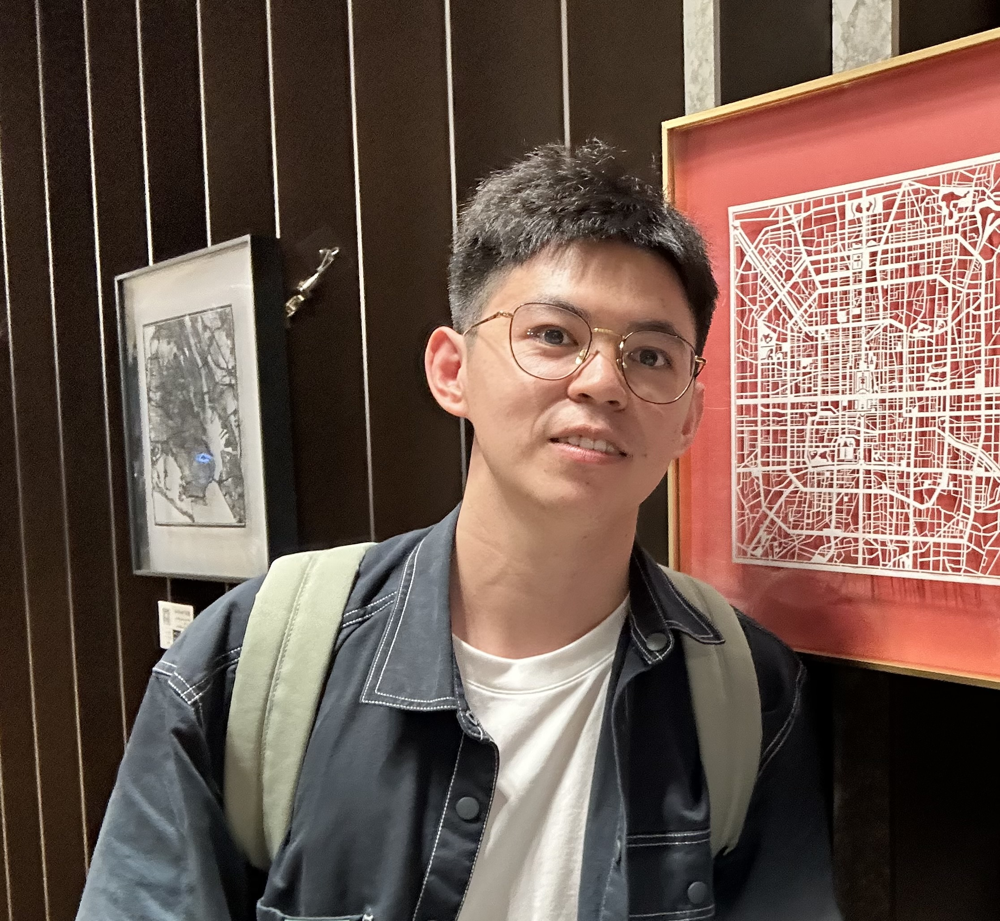

I am a J.J. Sylvester Assistant Professor at Johns Hopkins, working with Prof. Yiannis Sakellaridis. Before that, I obtained my Ph.D. from the University of Minnesota under the supervision of Prof. Dihua Jiang.
Email: zli468@jh.edu
Department of Mathematics, Johns Hopkins University, 404 Krieger Hall, 3400 N. Charles Street, Baltimore, Maryland 21218, USA.
I am working on number theory, mainly interested in automorphic forms, L-functions, relative trace formula, and related areas in the relative Langlands program.
Last updated: August 2026.